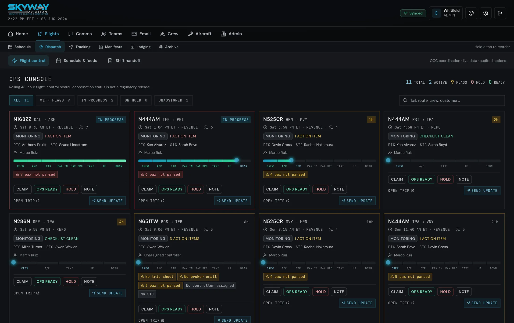

Dispatch · Ops Console
Run the day from one board.
The Ops Console pulls today's trips plus anything still in progress into a single card grid, each with a live eight-step status strip. Skyway flags what's missing before it bites — no trip sheet, no broker email, unparsed passengers, no PIC or SIC assigned — and pushes updates straight to the crew's phones.
- Filters for with flags and in progress, plus totals at a glance
- Schedule syncs from a JetInsight iCal feed or manual entry
- Send-update pushes to assigned dispatchers via Firebase Cloud Messaging
